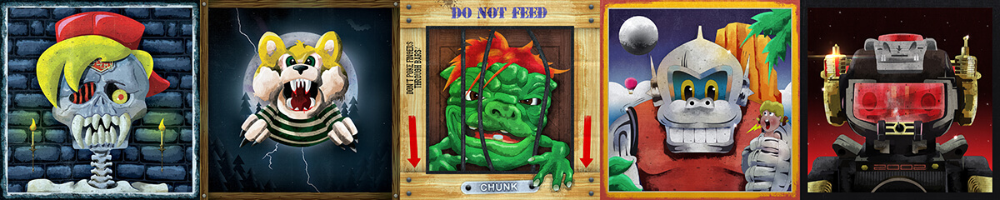
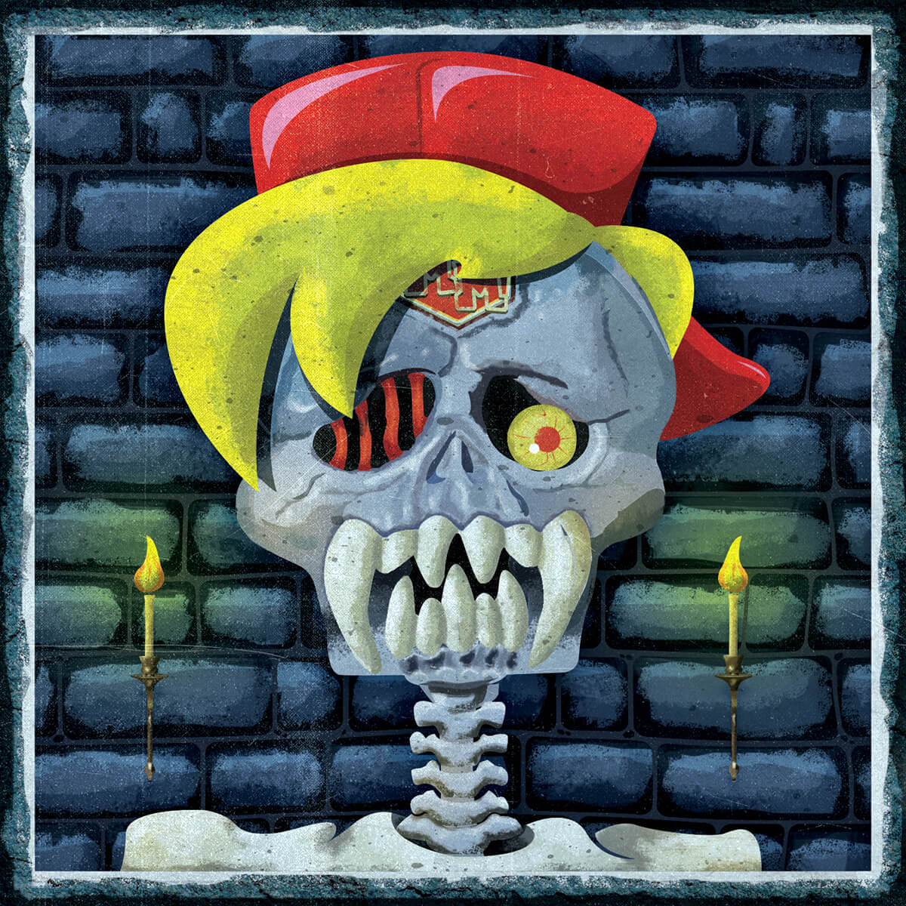
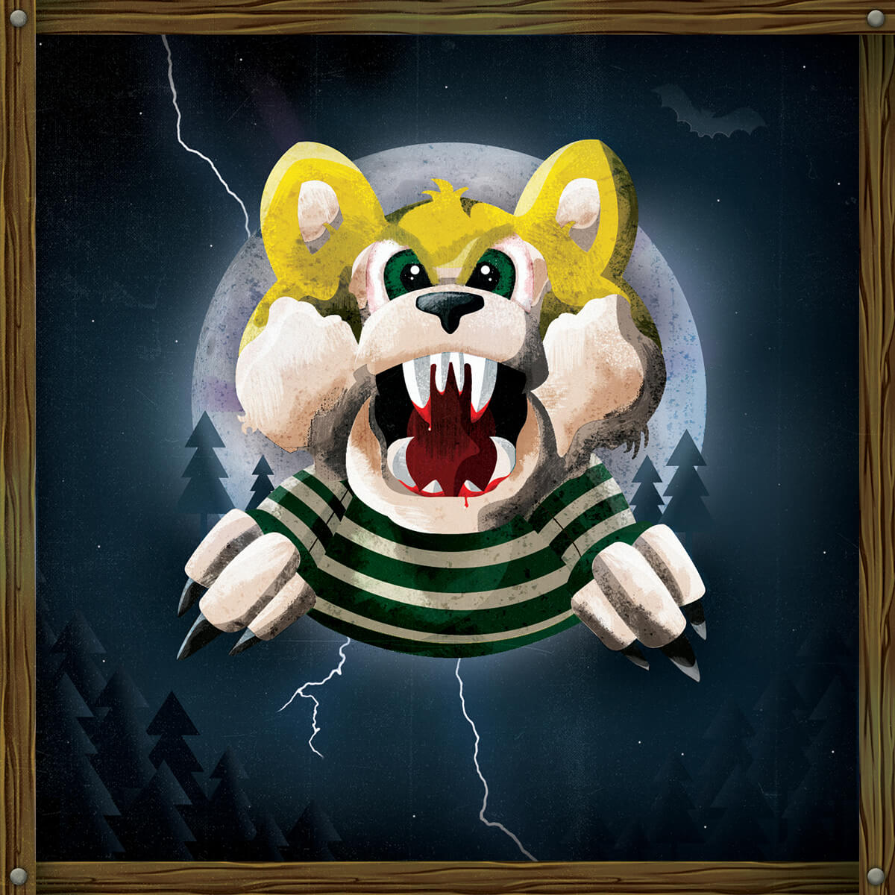
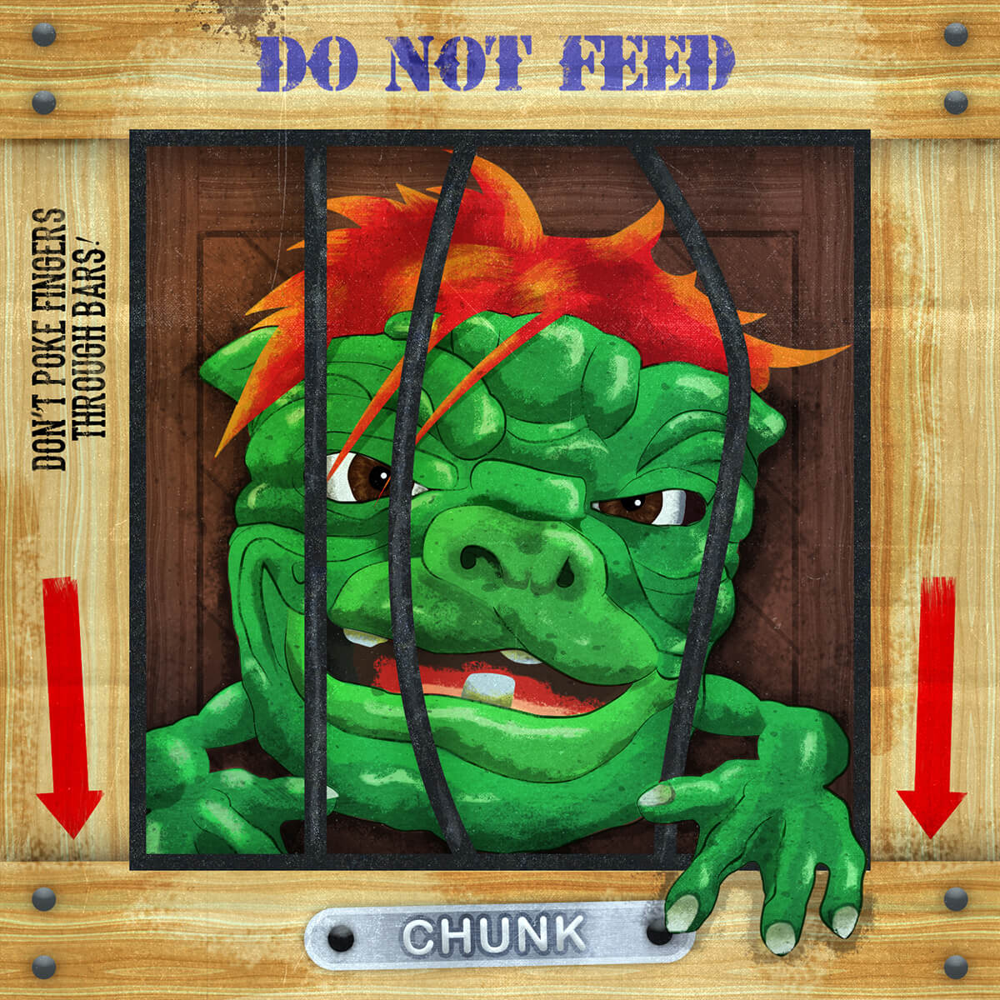
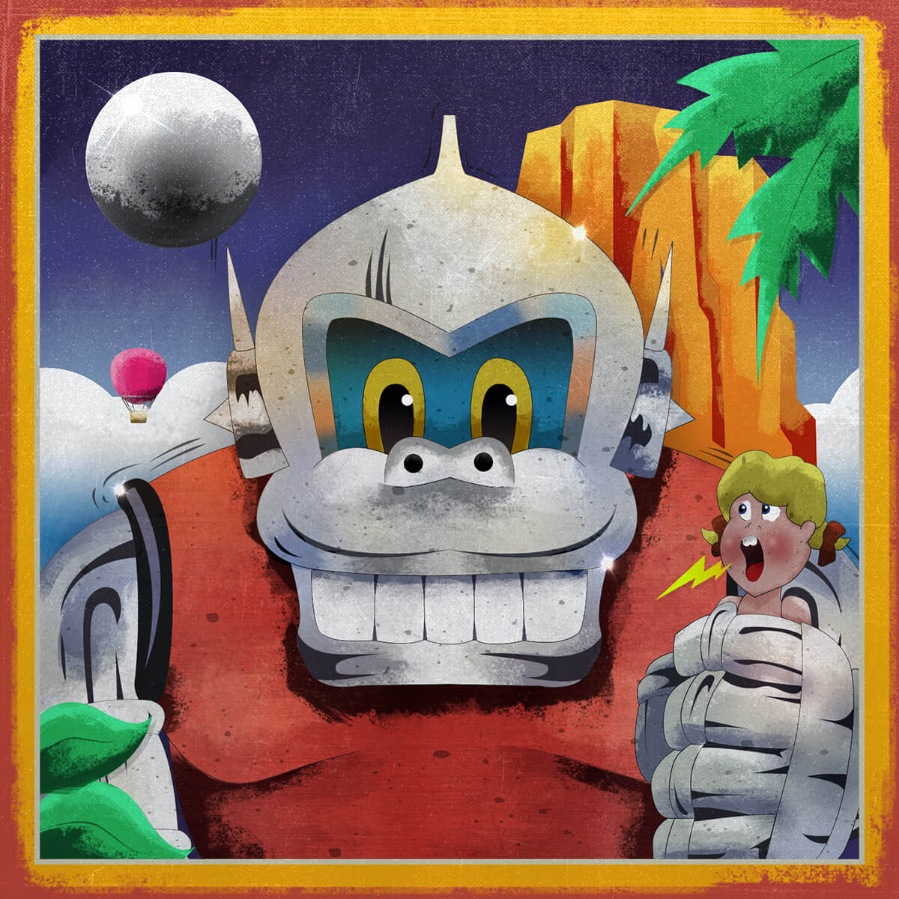
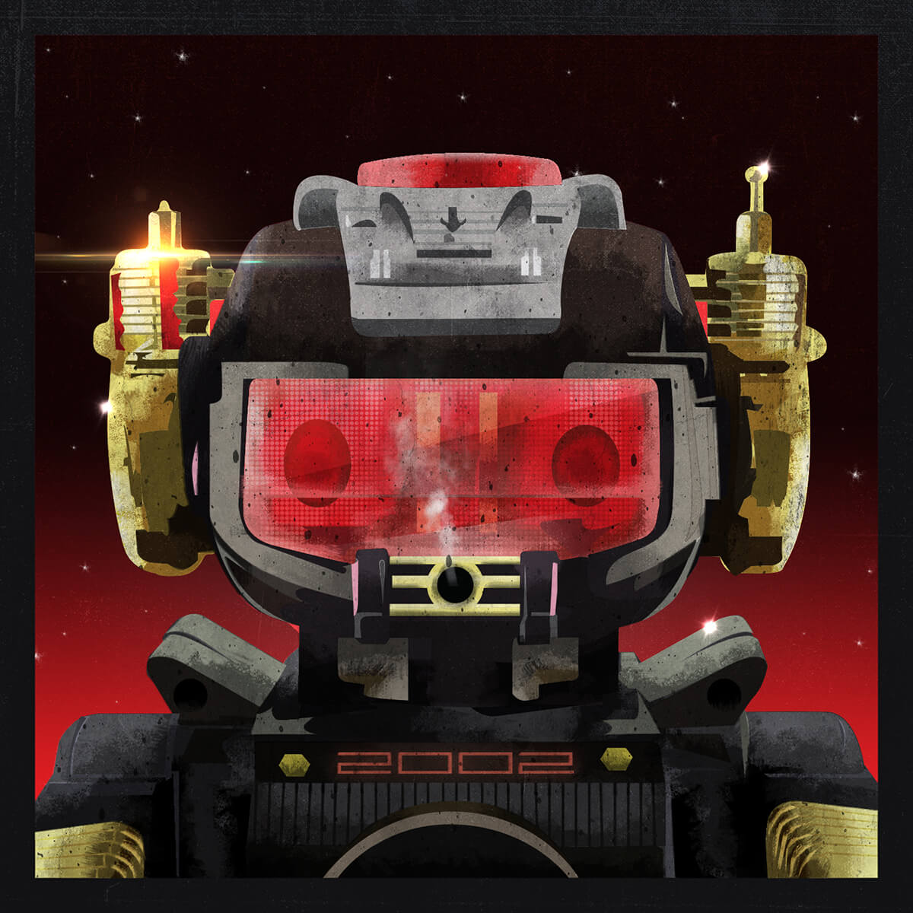

Toy Boy Series
I’ve always loved toys, so I thought what better way to start of this venture than to create some pieces based on the toys I remember from my childhood. These toys are from the late 80’s to the early 90’s.
Mighty Max
We start off with Mighty Max! These were head shaped toys that opened up to reveal a landscape/scene inside them including a few figures. These were hugely popular at my school. There was a lot of different versions/collectibles and it was great seeing what everyone else had. I had 'Skull Dungeon'. Mighty Max was also a TV programme that I used to watch on Saturday morning, I bloody loved it. I added Max’s trademark red hat and yellow hair to this piece, as well as his white shirt to bring the whole design together.
WereBears
Next we have WereBears! This was actually my brothers toy that he had for Christmas. It was great. It originally looked like a normal cuddly teddy, but you could rearrange the head and hands by turning them inside out to reveal the 'scary side'. The bear also came with a cassette that included a short story. I remember thinking how cool the whole package was.
Boglins
Remember these? I didn’t actually own one but these were everywhere in school. They were squidgy little hand puppets. They were packaged into a prison cell type box (no need to throw the box away!). I like how odd they look, there’s something quite intriguing about them. They came in different colours and had different faces, shapes, hair styles etc.
Kongman
I had tons of fun with this table top game. You had to control a steel ball and guide it up Kongman’s mountain to save the damsel in distress. I remember having competitions with my family to see how fast everyone could complete it. It was so frustrating but incredibly addictive. I’m surprised they don’t make this game anymore, it never gets old. This game was later re-skinned with a Sonic the Hedgehog theme (Sonic's Mountain Quest).
Magic Mike
No childhood toy series would be complete without a robot, this is where Magic Mike comes in. He could move around, had flashing eyes/lights and played a ton of sound effects. What made him stand out was that he used to blow out smoke! I think you had to put some oil into him somewhere (my Dad did this so I can’t remember exactly).
So there you have it! A few of my favourite toys recreated in Photoshop and Illustrator. I hope you enjoyed this post and it made you remember some of your own childhood memories.